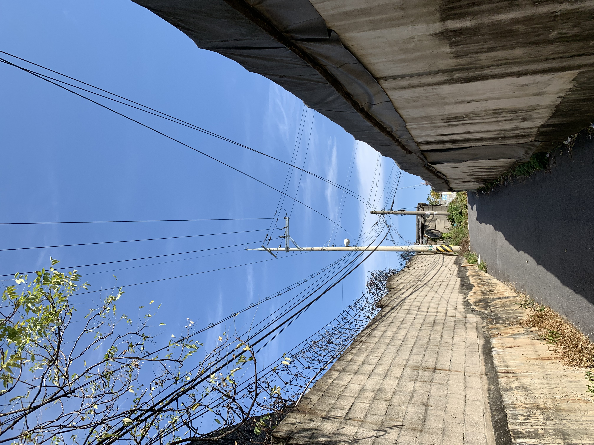
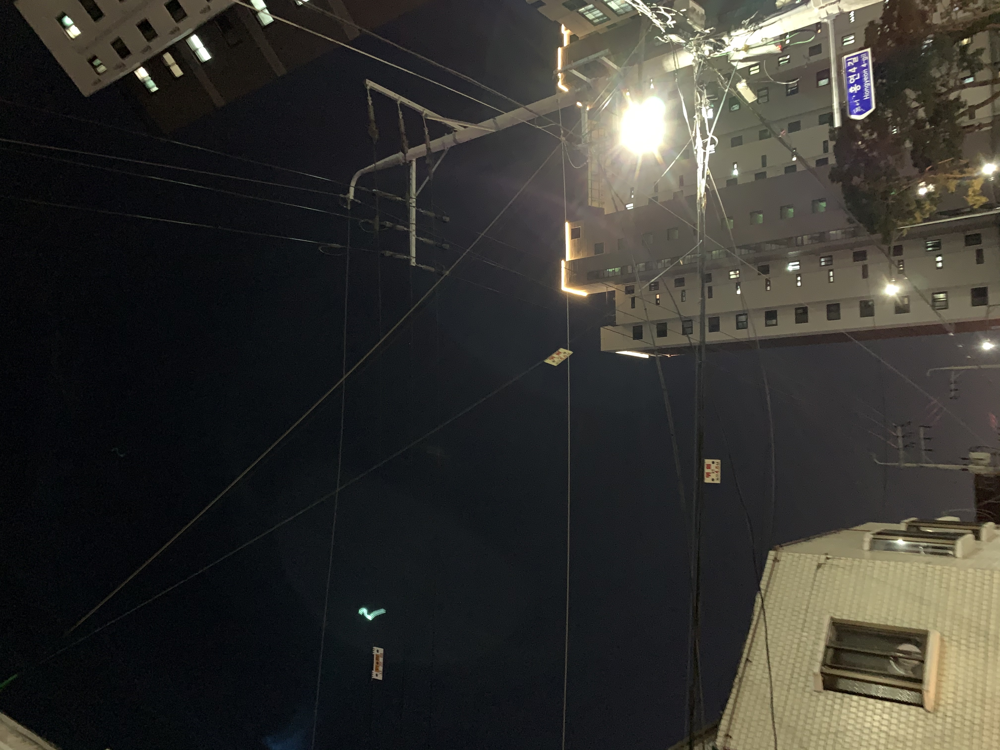
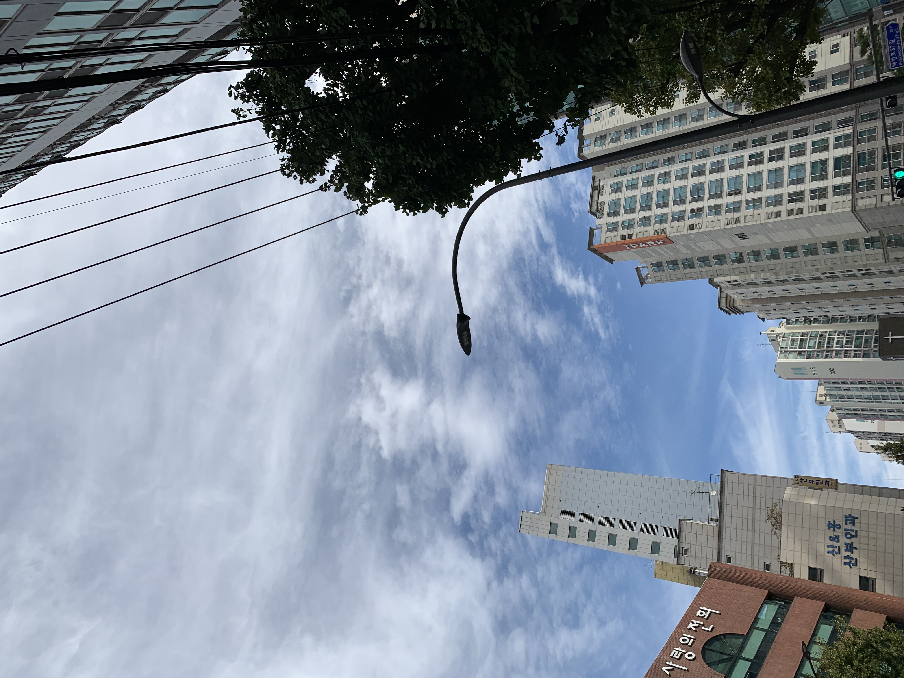

ABOUT
FRAGMENTS
TIMELINE
../
하늘 하루에 하늘을 몇번이나 볼까요? 하늘은 누구에게나 열려있는 둘도 없는 공공재가 아닐까 합니다. 60여일간 각각 다른 하늘을 찍고 짧은 단상을 적어보려고 합니다.
1013.txt

E7D3E4F7-7D57-4F6A-A9F3-916E12461772.jpeg
#-1
지하철 플랫폼. 발 디딜틈 없이 수 많은 인파. 한명의 예외없이 모두 고개를 숙이고 각자의 세계에 몰입 중이다. 스마트폰이라는 세계. 각박한 현실에서 그나마 볼 수 있는 작은 꿈의 조각.
1014.txt

9D708FDE-5B8C-4812-9CCB-2ACDA9CC517F.jpeg
#-1
특별히 자주 보게 되는 하늘이 있다. 의도하지 않아도 늘 보게 되는 하늘. 출근길 지하철 출구를 올라오며 마주하는 하늘. 무심하게 스쳐 지나갔다.
1015.txt

43D750DF-A8FD-462D-A05D-D00A8113D623.jpeg
#-1